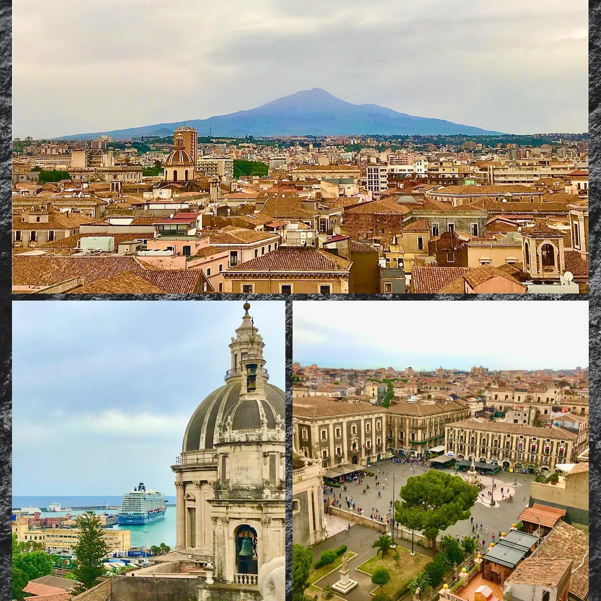
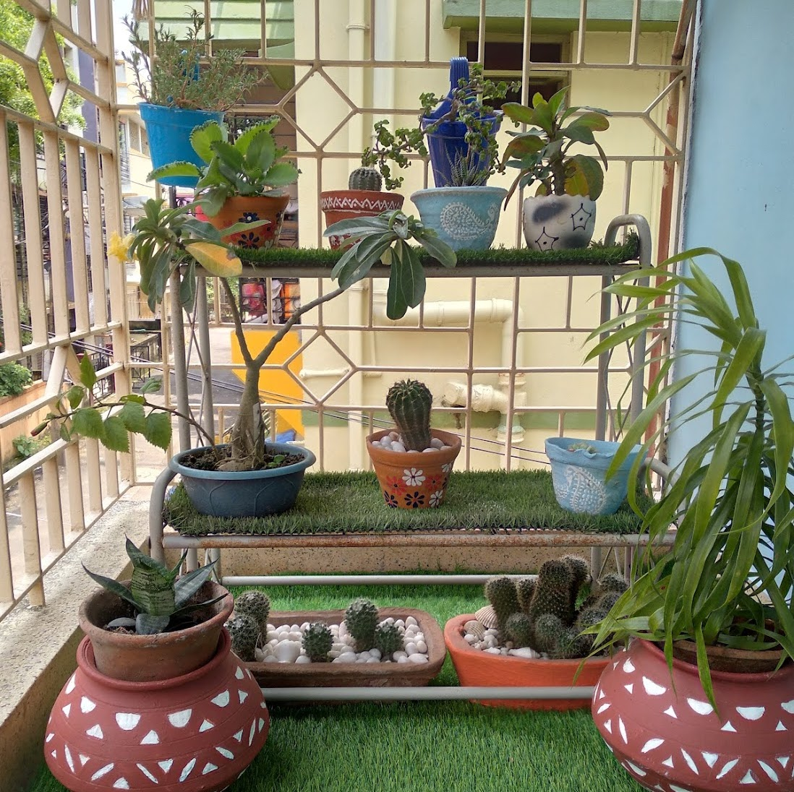
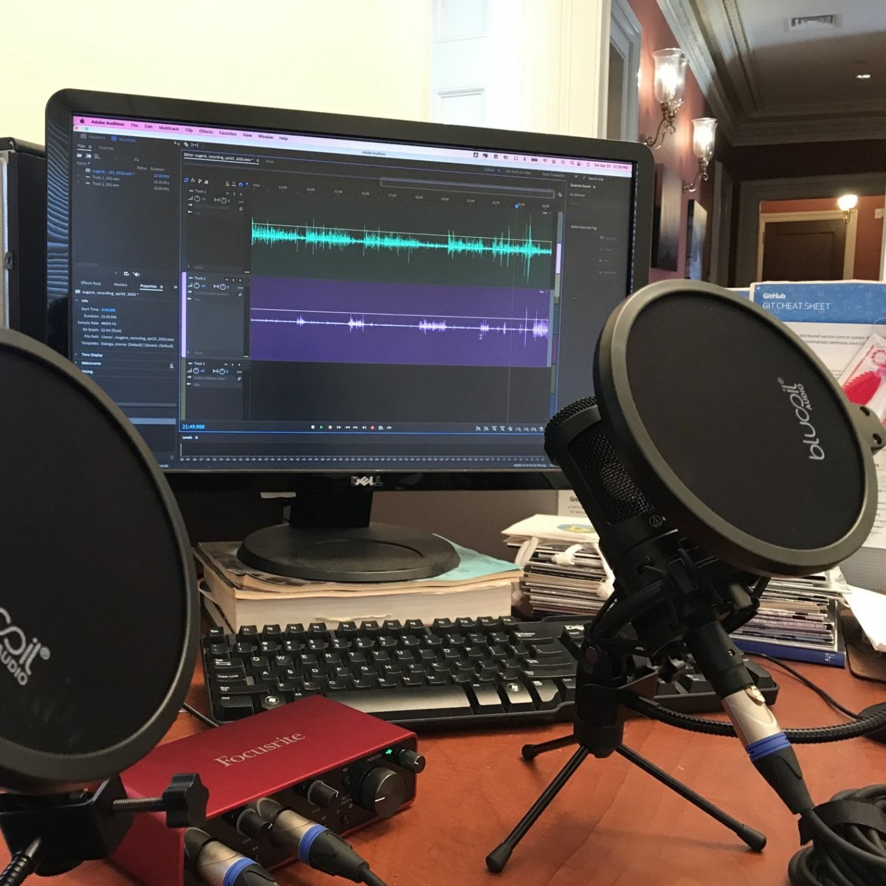
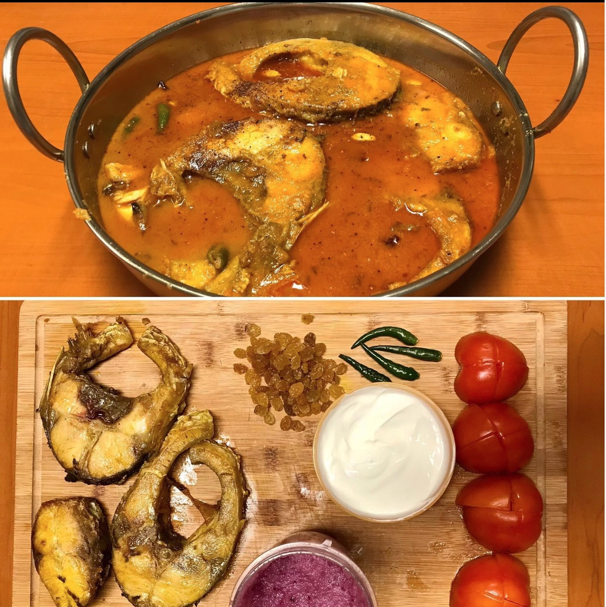
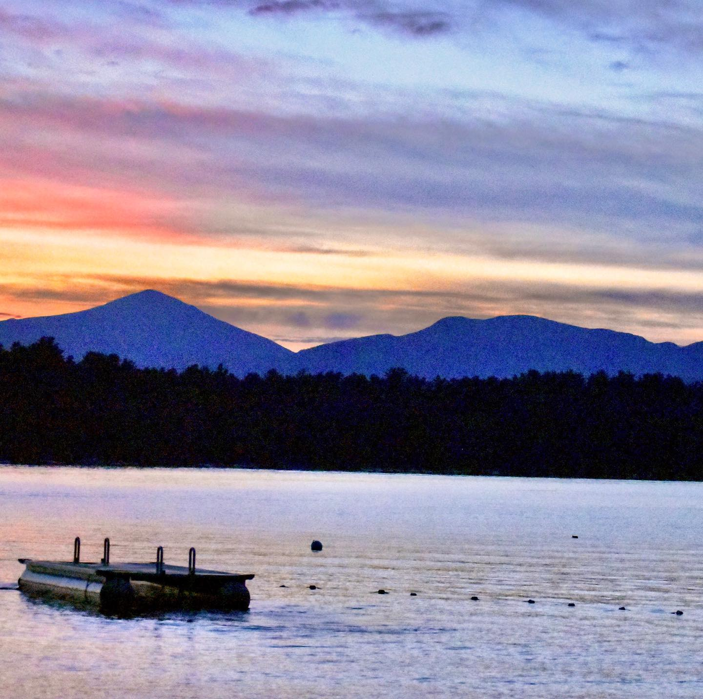
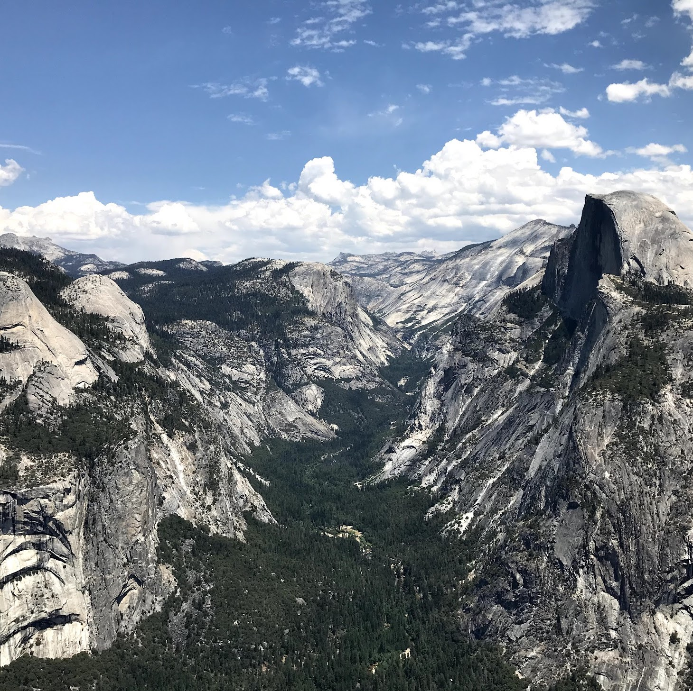

I am Aritra (aw-ree-tro) Ghosh,
an LSST-DA Catalyst Prize Postdoctoral Fellow. I
am currently hosting my fellowship at the University of Washington Astronomy Department
& the DiRAC Institute.
Academic History
| 2023 - '27: | LSST-DA Catalyst Prize Postdoctoral Fellow, Dept. of Astronomy & DiRAC Institute, Univ. of Washington
UW Data Science Postdoctoral Fellow, eScience Institute, Univ. of Washington |
| 2017 - '23: | Ph.D in Astrophysics | Yale University |
| 2015 - '17: | M.Sc. (cum laude) in Physics | University of Groningen, Netherlands |
| 2012 - '15: | B.Sc. (with Hons.) in Physics | Presidency University, Kolkata, India |
I was born and lived the first 21 years of my life in Kolkata (কোলকাতা), a laid-back old-school paradoxical mega-metropolis on the banks of the Ganga, in eastern India. Fascinated by how physics seemed to have an answer for most phenomena happening around us, I decided to pursue a bachelor degree in Physics at Presidency University, Kolkata. During my early undergraduate days, I became fascinated with computational methods and pursued diverse research themes over the three summers of undergrad, all tied together by their heavy use of different advanced computational techniques. Motivated by the research that I pursued over the summers and inspired by the extremely talented group of astrophysicists at Presidency, I decided to use my passion for computation to unlock the mysteries of the universe for my research thereafter. For my masters, I moved to Groningen, a beautiful small university-town in northern Holland. After two years in Holland, I decided to cross the Atlantic and go to Yale to pursue my Ph.D. in Astrophysics. After finishing my Ph.D., I crossed the continent and moved to Seattle to start my postdoctoral fellowship at the University of Washington. When I am not(astro)physics-ing, you may find me cooking extensive Bengali dishes, baking desserts, traveling, biking, dabbling with my camera, or listening to a diverse collection of eastern & western music. Below are some (possibly terribly outdated) photos that hopefully give you an indication of how my non-research life looks like.





